Project DeRisk, Senterprisys Limited
Dixon Homes runs its house builds through Project DeRisk, construction estimating and job management software made by Senterprisys in Queensland. As housing estimator and software testing support, I merged its two job templates into one, redesigned the estimating screens with the people who use them, tested every release, and wrote the help that comes with it.

- 2 → 1templates merged into one system
- 5 yearsof jobs reviewed to build it
- Rev 8.0of the combined template
- 2versions of every checklist
What the software does
Every house starts as a job in Project DeRisk: the client, the lot, the salesperson, the supervisor and the council. Estimators then measure quantities straight off the drawing plans, and the software builds the schedule and costs from there.

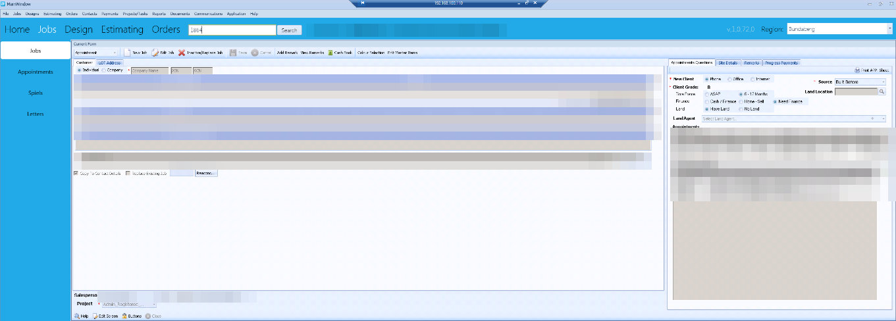

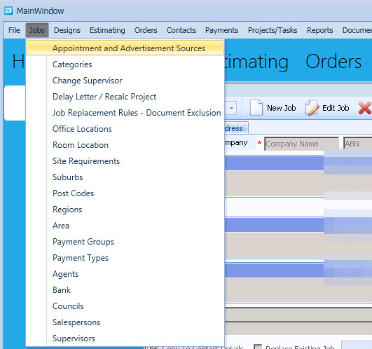
Two templates for one house
Each job ran on two templates, one for admin and one for construction. Staff jumped between them, entered the same tasks twice and lost track of where a job was up to.
With the project manager, I went through the critical tasks from the last five years of jobs, removed the duplicates and merged what was left into one template that follows a job from contract to handover.

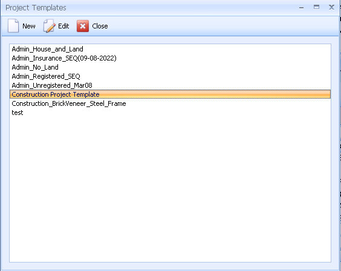

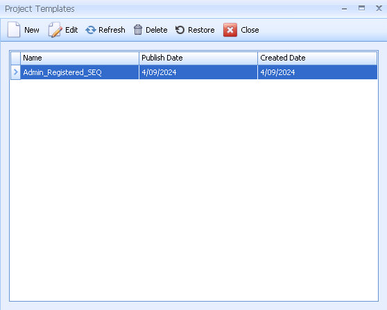
2 → 1templates merged into one, from five years of jobs
I split the tasks into main ones, which every job has, and optional ones that only some jobs need, so each team sees only the tasks that apply to the job in front of them.

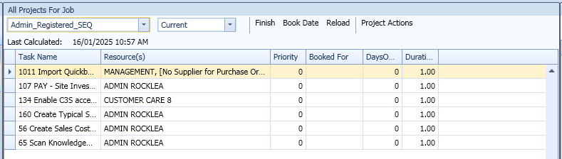
A schedule that runs itself
I rebuilt the template in MS Project so every task links to the tasks that depend on it, together with its resources and payment stage. When a stage is finished, the next one is scheduled and the progress payment can be billed automatically, instead of someone chasing it by hand.
The finished template sits inside the software, where supervisors and consultants track each job's daily progress against it.

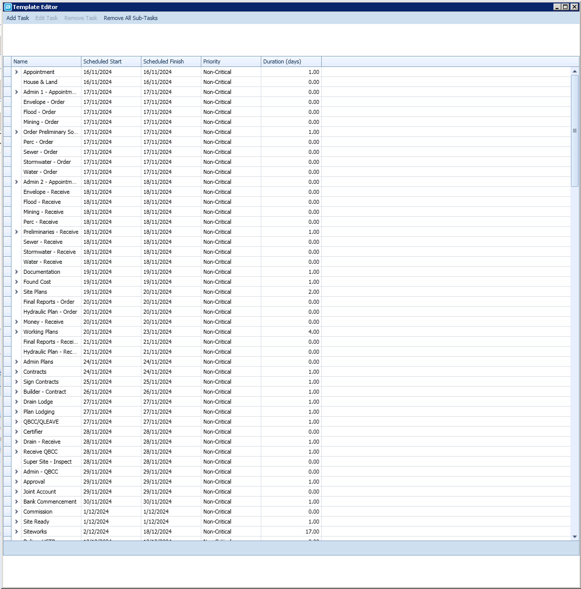

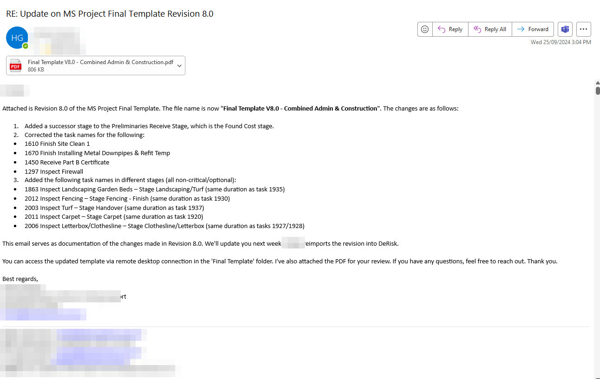
Putting Takeoff where estimators look
Estimators measure from drawings all day, yet the Takeoff button was buried in a row of small text buttons. I mocked up a new layout in Canva from an estimator's point of view: a side menu, supplier pricing by region, and Takeoff where you would look for it.

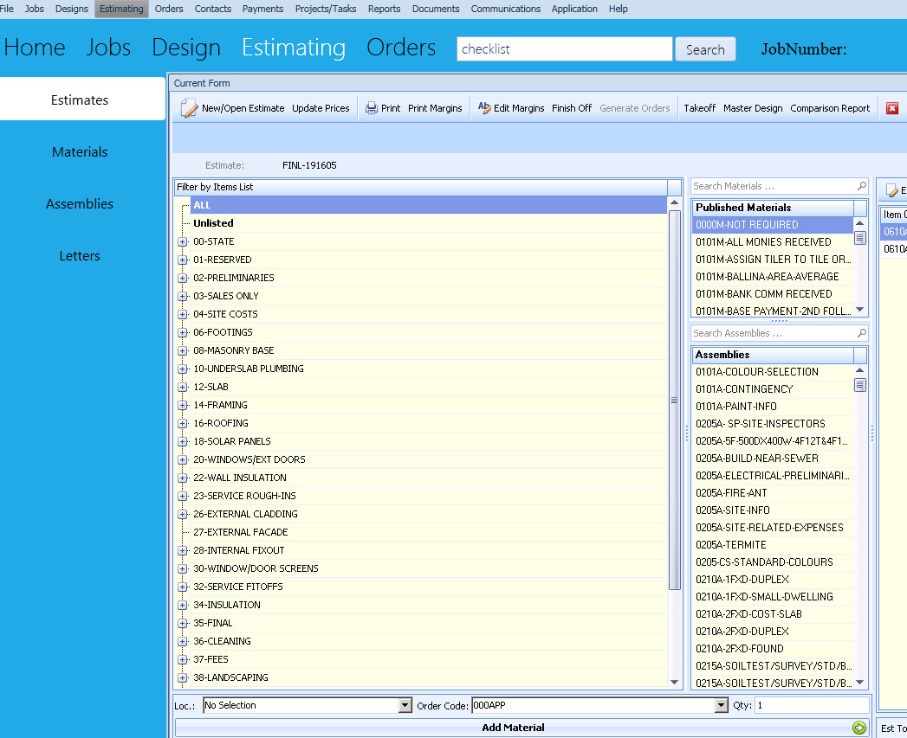

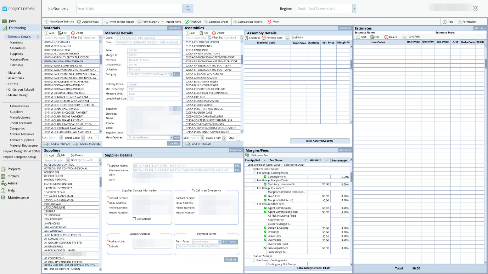
Each mock-up went to the development manager, came back with comments and went round again until it was approved, and then a developer built it. When the new layout clashed with the existing software, I proposed showing all the estimating data on a single screen instead.
The Project and Job screens got the same treatment: consistent icons, no duplicate or dead buttons, new screens for cost estimates, materials and suppliers, and an Edit button that goes straight to the job.

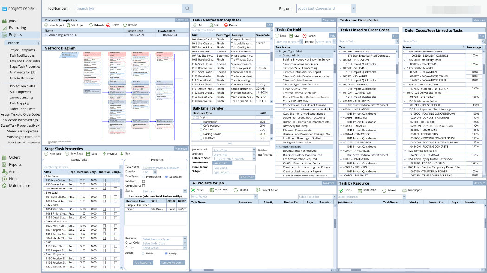

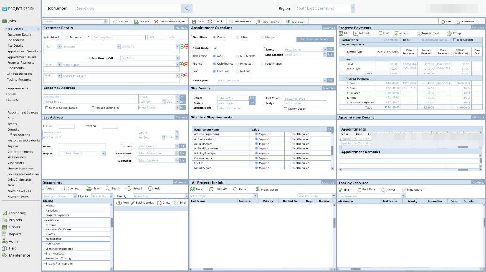
Testing before it ships
Before each release I tested the core features for calculation errors, data that did not match, and slow or broken screens. Measurements and estimates on large jobs tended to crash, so I reproduced each case and wrote it up for the developers to fix.
Users report problems in Jira. I triage each one, assign it to the right developer and give it a priority, so the issues that stop work are fixed first.

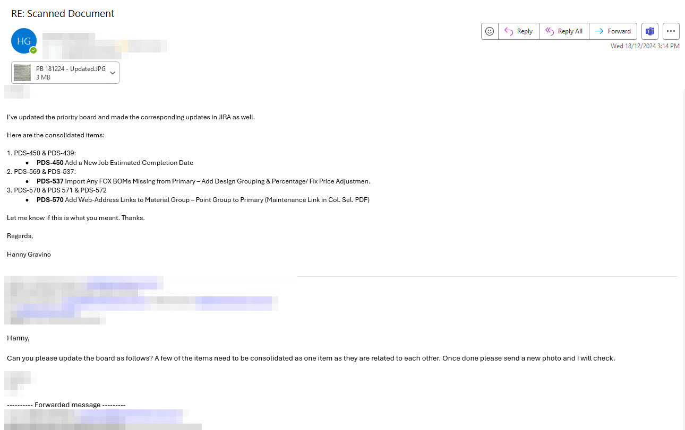
Help that lives in the software
Every change needs instructions. I wrote the user manual and a checklist for each task, in two versions, one with screenshots and one without, because people learn differently. They sit in the software's Help, one click from the screen they describe.
2versions of every checklist, with and without screenshots

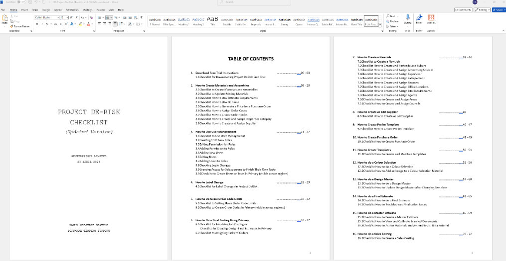

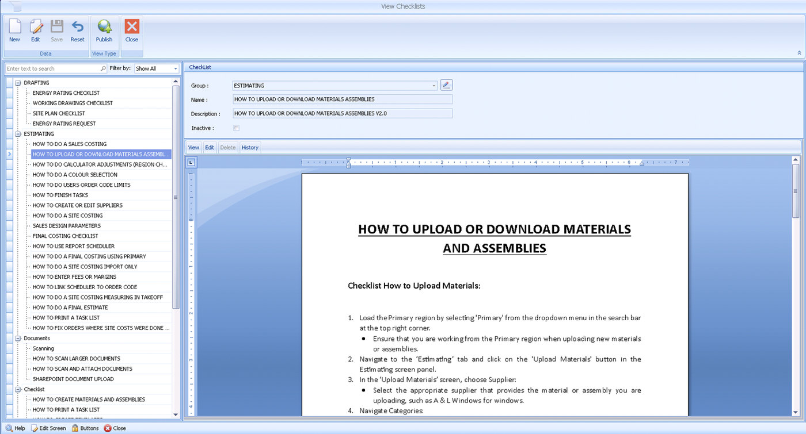
The combined template is what the client's teams now work from every day, and it keeps improving with each round of user feedback.
ToolsMS Project · Jira · Azure DevOps · Canva · Project DeRisk
More from the project file
Select any figure to see it full size. Personal details and logos are blurred throughout.